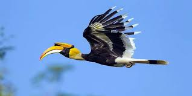

DeepSeek adalah pendekatan dalam pengembangan kecerdasan buatan (AI) yang menggabungkan pemrosesan data secara mendalam dengan pembelajaran mesin berbasis jaringan saraf tiruan, memungkinkan analisis lebih akurat dan pengambilan keputusan lebih cerdas dalam berbagai aplikasi. Muncul sebagai bagian dari evolusi AI yang semakin kompleks, DeepSeek berkembang dari teknik deep learning pada awal 2000-an, penerapan jaringan saraf dalam pengenalan gambar dan pemrosesan bahasa alami pada 2010-an, hingga penggunaannya dalam industri, kesehatan, dan sistem otomatisasi pada 2020-an. Teknologi utama yang membangun DeepSeek meliputi deep learning untuk pembelajaran tingkat lanjut, big data processing yang memungkinkan analisis cepat dalam jumlah besar, serta kecerdasan kontekstual untuk memahami dan mengambil keputusan berdasarkan data yang lebih kompleks. Saat ini, DeepSeek telah diterapkan dalam berbagai bidang seperti kesehatan untuk prediksi penyakit dan diagnosis medis, keuangan dalam analisis tren pasar dan deteksi penipuan, robotika guna meningkatkan responsivitas robot terhadap lingkungan, serta edukasi dalam personalisasi metode pembelajaran. Manfaat DeepSeek mencakup peningkatan efisiensi dan akurasi di berbagai industri, pengurangan kesalahan manusia dalam pengambilan keputusan, serta penyediaan solusi berbasis data yang lebih cepat. Namun, tantangan yang dihadapi meliputi privasi dan keamanan data yang berisiko bocor, ketergantungan berlebihan pada AI yang dapat mengurangi keterlibatan manusia, serta biaya implementasi yang tinggi akibat perlunya infrastruktur dan riset yang canggih. Ke depan, DeepSeek diprediksi akan semakin berkembang dengan integrasi teknologi AI yang lebih maju, termasuk penerapan dalam kota pintar untuk pengelolaan lalu lintas dan sumber daya, pengembangan asisten virtual yang lebih interaktif, serta peningkatan keamanan siber berbasis AI. Dengan segala potensinya, DeepSeek menjadi inovasi kecerdasan buatan yang dapat mengubah cara manusia berinteraksi dengan teknologi, meskipun tetap menghadapi berbagai tantangan yang perlu diatasi untuk mencapai penerapan yang lebih luas dan optimal.
Tema 2 Burung Enggang Kalimantan Timur: "Ikon Kearifan Lokal dan Keanekaragaman Hayati"

Burung Enggang Kalimantan Timur, yang juga dikenal sebagai rangkong atau hornbill, adalah burung besar yang memiliki ciri khas paruh besar melengkung dengan tambahan struktur seperti tanduk di atasnya yang disebut "casque." Burung ini termasuk dalam keluarga Bucerotidae dan sering ditemukan di hutan hujan tropis Kalimantan. Burung enggang memiliki peran penting dalam ekosistem sebagai penyebar biji karena pola makannya yang terdiri dari buah-buahan serta serangga kecil. Secara umum, panjang burung enggang bervariasi tergantung spesiesnya. Salah satu spesies yang paling terkenal di Kalimantan Timur adalah Rangkong Badak (Buceros rhinoceros), yang bisa mencapai panjang sekitar 90–120 cm dengan rentang sayap lebih dari 150 cm. Selain itu, Rangkong Gading (Rhinoplax vigil), yang juga ditemukan di Kalimantan, dapat memiliki panjang tubuh sekitar 100–120 cm, menjadikannya salah satu spesies rangkong terbesar di dunia.
Burung enggang memiliki makna budaya yang mendalam bagi masyarakat Dayak di Kalimantan Timur. Mereka dianggap sebagai simbol kesucian, keberanian, dan hubungan spiritual dengan alam. Namun, karena perburuan ilegal dan deforestasi, populasi burung ini semakin berkurang dan beberapa spesies, seperti Rangkong Gading, bahkan masuk dalam kategori terancam punah menurut IUCN. Oleh karena itu, berbagai upaya konservasi telah dilakukan untuk melindungi keberlangsungan hidup burung enggang di habitat aslinya.
Tema 3 Robotika: "Masa Depan Teknologi dan Dampaknya"
Robotika adalah cabang ilmu yang berfokus pada desain, konstruksi, pengoperasian, dan penggunaan robot yang menggabungkan kecerdasan buatan (AI), mekanika, elektronika, dan pemrograman komputer untuk menciptakan mesin yang dapat melakukan tugas secara otomatis atau dengan sedikit interaksi manusia. Salah satu pendekatan dalam pengembangan AI yang berkaitan dengan robotika adalah DeepSeek, yang mengoptimalkan pemrosesan data dan pembelajaran mesin berbasis jaringan saraf tiruan untuk meningkatkan kinerja robot dalam pengambilan keputusan dan interaksi yang lebih alami dengan lingkungan. Sejarah perkembangan robotika dimulai sejak abad ke-20, dengan tonggak penting seperti diperkenalkannya "Tiga Hukum Robotika" oleh Isaac Asimov pada 1950-an, penggunaan robot industri pertama bernama Unimate oleh General Motors pada 1961, serta perkembangan AI yang semakin pesat pada 2000-an hingga sekarang, memungkinkan robot digunakan dalam berbagai sektor seperti kesehatan, militer, dan eksplorasi luar angkasa. Berdasarkan fungsinya, robot dapat dikategorikan menjadi beberapa jenis, seperti robot industri untuk manufaktur, robot medis untuk operasi dan rehabilitasi, robot layanan dalam sektor perhotelan dan rumah tangga, robot militer dalam pertahanan dan pengintaian, serta robot eksplorasi untuk penelitian luar angkasa dan laut dalam. Teknologi yang digunakan dalam robotika meliputi AI untuk pembelajaran dan pengambilan keputusan, DeepSeek AI untuk pemrosesan data yang lebih kompleks, sensor dan aktuator untuk deteksi dan interaksi dengan lingkungan, serta jaringan dan komunikasi yang memungkinkan robot terhubung melalui Internet of Things (IoT). Robotika memberikan berbagai manfaat seperti meningkatkan efisiensi dan produktivitas industri, membantu dalam bidang kesehatan dengan operasi presisi tinggi, serta meningkatkan keselamatan kerja dengan mengurangi keterlibatan manusia dalam pekerjaan berbahaya, namun juga menghadapi tantangan seperti penggantian tenaga kerja manusia yang dapat menyebabkan pengangguran, masalah keamanan dan etika dalam penggunaan AI, serta ketergantungan terhadap teknologi yang bisa menjadi risiko jika terjadi kegagalan sistem. Di masa depan, robotika diprediksi akan semakin berkembang dengan munculnya AI yang lebih canggih, interaksi manusia-robot yang lebih alami, serta robot yang lebih otonom, dengan tren seperti robot asisten pribadi yang lebih pintar, penerapan robot dalam pembangunan kota pintar, dan penggunaan robot untuk pekerjaan berisiko tinggi. Dengan perkembangan teknologi yang semakin pesat, masa depan robotika akan semakin menjanjikan dan membawa perubahan signifikan bagi dunia, meskipun tantangan seperti etika dan penggantian tenaga kerja tetap perlu diperhatikan agar dampak negatifnya dapat diminimalisir.
Di sebuah desa kecil, hiduplah dua sahabat karib bernama Ali dan Umar. Mereka selalu bersama, bermain, dan bercanda sepanjang hari. Namun, menjelang Idul Adha, mereka mulai membicarakan tentang hewan kurban.
Suatu hari, Ali mendengar ceramah di masjid tentang keutamaan berkurban. Ia pun pulang dengan tekad kuat, "Aku ingin berkurban tahun ini!" Tapi begitu melihat dompetnya yang hanya berisi beberapa koin, Ali mulai berpikir keras.
"Aku butuh uang buat beli kambing... Hmm, apa yang bisa kujual?" pikirnya.
Saat sedang termenung, tiba-tiba Umar lewat sambil membawa sekeranjang mangga. Ali pun mendapatkan ide konyol.
"Umar! Aku punya rencana besar!" seru Ali.
"Apa tuh?" tanya Umar, penasaran.
"Aku akan menjual sesuatu yang sangat berharga… yaitu kamu!" jawab Ali dengan penuh semangat.
Umar langsung terbelalak. "APA?! Aku bukan kambing, Ali!"
"Tapi, kalau ada orang kaya yang mau beli kamu, lalu aku dapat uangnya, aku bisa beli kambing untuk kurban!" jawab Ali santai.
Umar geleng-geleng kepala. "Ali, kurban itu harus hewan ternak, bukan teman sendiri!"
Ali tertawa. "Hahaha, aku bercanda, Umar! Aku cuma mau ngajarin kamu satu hal, bahwa berkurban itu bukan sekadar beli hewan, tapi tentang keikhlasan dan berbagi."
Mereka pun akhirnya bersama-sama menabung sedikit demi sedikit dan berhasil membeli seekor kambing kecil untuk kurban. Saat hari Idul Adha tiba, mereka dengan penuh kebahagiaan menyaksikan prosesi kurban dan merasa bangga karena bisa berbagi dengan sesama.
Keikhlasan dalam Berkurban Berkurban bukan hanya tentang membeli hewan, tetapi juga tentang niat tulus dan keikhlasan untuk berbagi dengan sesama.
Persahabatan yang Baik Sahabat sejati akan selalu mengingatkan kepada kebaikan dan membantu dalam mencapai tujuan yang baik.
Kreativitas dalam Berusaha Jika memiliki tekad kuat, selalu ada cara halal untuk mencapai impian, seperti menabung dan bekerja keras.
Berkurban adalah Wujud Kepedulian Dengan berkurban, kita bisa membantu orang lain yang membutuhkan dan menumbuhkan rasa syukur atas rezeki yang dimiliki.
Ilmu Lebih Penting dari Hanya Sekadar Keinginan – Memahami makna ibadah lebih penting daripada sekadar melakukannya tanpa ilmu.
Tema 5 Asal Usul Hantu Kuyang – Legenda Mistis dari Kalimantan
Di pedalaman Kalimantan, masyarakat percaya bahwa Kuyang bukan sekadar cerita rakyat, tetapi makhluk gaib yang benar-benar ada. Konon, kuyang adalah hasil dari praktik ilmu hitam yang dilakukan oleh seorang wanita yang ingin mendapatkan keabadian dan kesaktian.
Legenda Asal Usul Kuyang
Dahulu kala, di sebuah desa terpencil di Kalimantan, hiduplah seorang perempuan bernama Sari. Ia adalah tabib muda yang dikenal memiliki kecantikan luar biasa. Namun, di balik parasnya yang menawan, Sari menyimpan ambisi besar ia ingin tetap muda dan cantik selamanya.
Suatu hari, ia bertemu dengan seorang dukun sakti yang mengajarkan ilmu keabadian. Namun, untuk mendapatkannya, Sari harus melakukan ritual khusus. Ritual itu mengharuskannya minum ramuan khusus dan berjanji menyerahkan dirinya kepada ilmu hitam. Sari pun melakukannya tanpa ragu.
Pada awalnya, Sari merasa lebih kuat dan kecantikannya tak pudar meski bertahun-tahun berlalu. Namun, ia mulai mengalami perubahan mengerikan: setiap malam, tubuhnya terasa panas dan kepalanya terasa ingin lepas. Hingga suatu malam, tanpa disadari, kepalanya benar-benar terlepas dari tubuh, hanya menyisakan organ dalam yang menggantung!
Ia menyadari bahwa kini dirinya telah menjadi KUYANG makhluk mengerikan yang harus mencari darah wanita hamil atau bayi yang baru lahir untuk mempertahankan keabadiannya. Sejak saat itu, setiap malam, Sari terbang mencari mangsanya, bersembunyi di balik pepohonan, di atap rumah, atau menempel di jendela para wanita yang baru melahirkan.
Masyarakat yang menyadari keberadaannya pun mulai melakukan berbagai cara untuk menangkal kuyang. Gunting, sapu lidi, dan bawang merah dipercaya bisa mengusirnya. Bahkan, beberapa orang percaya bahwa jika seseorang bisa menemukan dan memukul tubuh kuyang yang ditinggalkan saat kepalanya terbang, maka makhluk itu akan mati.
Keserakahan dapat membawa bencana – Keinginan untuk hidup abadi membuat Sari kehilangan kemanusiaannya.
Ilmu hitam selalu memiliki konsekuensi – Segala sesuatu yang bertentangan dengan kodrat alam akan membawa akibat buruk.
Kebaikan lebih kuat dari kejahatan – Masyarakat bersatu untuk melawan kejahatan, menunjukkan bahwa kebaikan selalu bisa menang.
Tama 5 Kisah Perang Badar: "Kemenangan Spektakuler 313 vs 1000"
Perang Badar adalah salah satu pertempuran paling bersejarah dalam Islam. Terjadi pada 17 Ramadan tahun 2 Hijriah (sekitar 624 Masehi), pertempuran ini mempertemukan 313 pasukan Muslim yang dipimpin oleh Rasulullah Muhammad SAW melawan 1000 pasukan Quraisy Mekah yang jauh lebih besar dan bersenjata lengkap.
Latar Belakang Perang Badar
Setelah hijrah ke Madinah, kaum Muslim masih sering mendapat ancaman dari Quraisy Mekah yang ingin menghancurkan mereka. Saat itu, Rasulullah mendapatkan kabar bahwa kafilah dagang Quraisy yang dipimpin oleh Abu Sufyan sedang melakukan perjalanan dari Syam menuju Mekah. Rasulullah pun mengajak para sahabat untuk menghadang kafilah itu, dengan tujuan melemahkan ekonomi Quraisy yang terus menindas kaum Muslim.
Namun, Abu Sufyan mengetahui rencana ini dan meminta bantuan ke Mekah. Abu Jahal, salah satu pemimpin Quraisy yang paling membenci Islam, mengumpulkan 1000 prajurit lengkap dengan kuda, senjata, dan baju besi untuk menghadapi kaum Muslimin di Lembah Badar.
Kekuatan Pasukan
Pasukan
Jumlah
Perlengkapan
Kaum Muslimin
313
Hanya memiliki 2 ekor kuda, sekitar 70 unta, dan sebagian besar pasukan berjalan kaki. Senjata pun sangat terbatas.
Kaum Quraisy
1000
Dilengkapi 100 ekor kuda, ratusan unta, senjata lengkap, dan baju besi.
Dari segi jumlah dan perlengkapan, kaum Muslim sangat kalah jauh. Namun, mereka memiliki satu hal yang tidak dimiliki kaum Quraisy: iman yang kuat dan keyakinan bahwa Allah akan menolong mereka.
Jalannya Pertempuran
Doa Rasulullah SAW
Sebelum pertempuran dimulai, Rasulullah berdoa dengan penuh harapan dan kepasrahan kepada Allah. Beliau mengangkat tangan tinggi-tinggi dan memohon, “Ya Allah, jika pasukan kecil ini kalah, maka tidak ada lagi yang akan menyembah-Mu di bumi ini.”
Turunnya 1000 Malaikat sebagai Pertolongan Allah
Allah mengabulkan doa Rasulullah dan menurunkan 1.000 malaikat untuk membantu pasukan Muslim. Banyak sahabat melihat sosok-sosok putih bertempur bersama mereka.
Duel Awal
Sebelum perang besar dimulai, terjadi duel antara tiga pendekar Muslim (Ali bin Abi Thalib, Hamzah bin Abdul Muttalib, dan Ubaidah bin Al-Harith) melawan tiga pendekar Quraisy (Utbah, Syaibah, dan Walid bin Utbah). Hasilnya, Ali dan Hamzah berhasil mengalahkan lawan mereka, sementara Ubaidah terluka parah.
Serangan Pasukan Muslim
Rasulullah memerintahkan pasukan Muslim untuk menyerang dengan strategi barisan ketat. Dengan pertolongan Allah, pasukan Quraisy mulai goyah.
Kekalahan Kaum Quraisy
Setelah pertempuran sengit, pasukan Quraisy mengalami kekalahan besar. 70 orang tewas, termasuk Abu Jahal, dan 70 lainnya ditawan. Sementara itu, hanya 14 orang Muslim yang gugur sebagai syuhada.
Hasil dan Dampak Perang Badar
Aspek
Dampak
Kemenangan Kaum Muslim
Meskipun jumlahnya kecil, pasukan Islam menang dengan gemilang. Ini menunjukkan bahwa kemenangan tidak hanya bergantung pada jumlah dan kekuatan fisik, tetapi juga pada keimanan dan pertolongan Allah.
Kehancuran Quraisy
Kekalahan ini sangat memalukan bagi kaum Quraisy. Mereka kehilangan banyak pemimpin dan mengalami krisis kepercayaan.
Meningkatnya Keimanan Muslim
Kemenangan ini memperkuat keyakinan kaum Muslim bahwa Allah selalu bersama mereka jika mereka bersabar dan bertakwa.